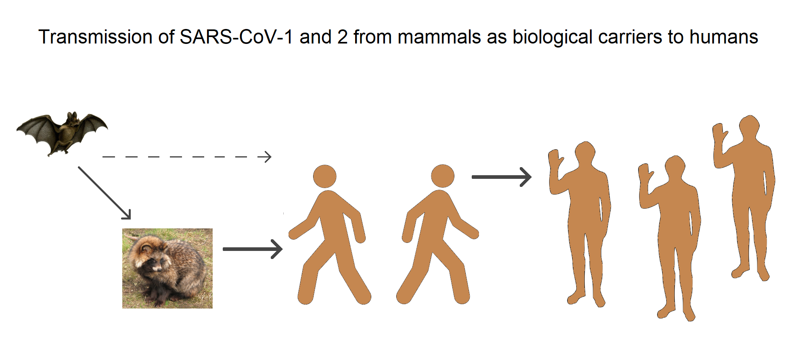
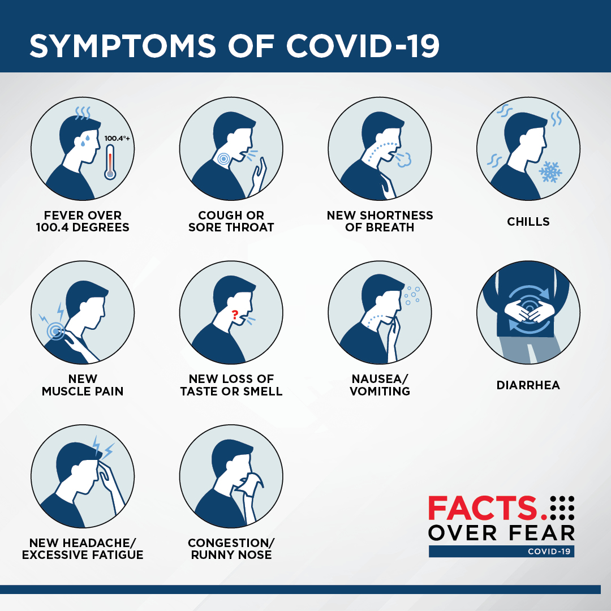
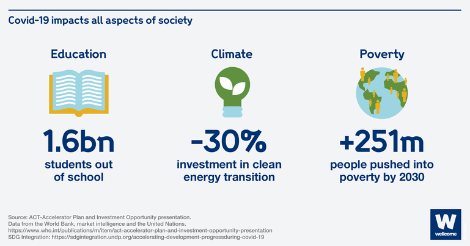
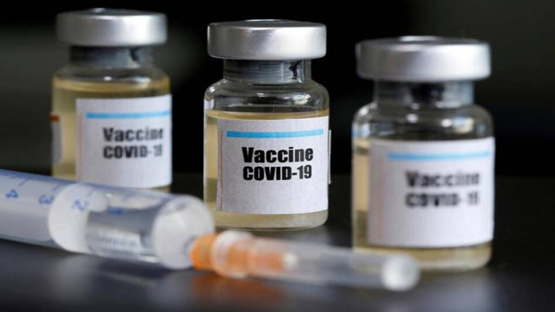

Year Originated
2020
Location of Origin
Wuhan, China
Spread of Virus/Disease
Global pandemic
Precautions required
Wear masks, practice social distancing
2020
Wuhan, China
Global pandemic
Wear masks, practice social distancing

Human-to-human transmission of SARS CoV2 was confirmed on 20 January 2020 during the COVID-19 pandemic. Transmission was initially assumed to occur primarily via respiratory droplets from coughs and sneezes within a range of about 1.8 metres (6 ft). Laser light scattering experiments suggest that speaking is an additional mode of transmission and a far-reaching one, indoors, with little air flow. Other studies have suggested that the virus may be airborne as well, with aerosols potentially being able to transmit the virus. During human-to-human transmission, between 200 and 800 infectious SARS‑CoV‑2 virions are thought to initiate a new infection. If confirmed, aerosol transmission has biosafety implications because a major concern associated with the risk of working with emerging viruses in the laboratory is the generation of aerosols from various laboratory activities which are not immediately recognizable and may affect other scientific personnel. Indirect contact via contaminated surfaces is another possible cause of infection. Preliminary research indicates that the virus may remain viable on plastic (polypropylene) and stainless steel (AISI 304) for up to three days, but it does not survive on cardboard for more than one day or on copper for more than four hours. The virus is inactivated by soap, which destabilizes its lipid bilayer. Viral RNA has also been found in stool samples and semen from infected individuals.
People with COVID-19 have reported a wide range of symptoms ranging from mild to severe. Symptoms may appear 2-14 days after exposure to the virus. Anyone can have mild to severe symptoms. Possible symptoms include:
This list does not include all possible symptoms. Symptoms may change with new COVID variants and can vary by person. The CDC will continue to update this list as we learn more about COVID.

The stats below show the danger and consequences of SARS-CoV-2
 14,112,077
Active Cases
14,112,077
Active Cases
 595,685
Deaths
595,685
Deaths
 8,397,665
Recovered Cases
8,397,665
Recovered Cases

Businesses closed too, leading to the equivalent of 255 million full-time jobs lost, in terms of working hours, in 2020. Among the worst hit are workers in the informal economy, young people and women. Any economic recovery will likely be uneven, leading to greater inequality in the coming years. Women have been harder hit economically by the pandemic because they are a large proportion of the workers in sectors severely affected by Covid-19, including accommodation and food services, and in front-line occupations, such as the health and social care sectors. With the closures of schools, they have also had to take on more care responsibilities at home. Whether through job losses or school closures, the pandemic threatens to undo decades of progress on gender equality. Covid-19 has been slowing down progress on clean energy too, at least temporarily, by curbing investments and delaying the expansion of clean energy technologies.

The treatments available for individuals at high risk of severe illness from COVID-19 include nirmatrelvir plus ritonavir (Paxlovid), sotrovimab (Xevudy), molnupiravir (Lagevrio), and remdesivir (Veklury). These medications, including nirmatrelvir plus ritonavir, molnupiravir, and remdesivir, are antiviral drugs. Your doctor will determine the most suitable treatment for you. Treatments may be administered as capsules, tablets, or intravenous infusions in a hospital or health center. These treatments can help manage COVID-19 symptoms and reduce the risk of severe illness. Local NHS organizations coordinate COVID-19 treatments, and the process varies by location. Rapid lateral flow tests are recommended for those eligible for treatment, and individuals with symptoms should contact their GP, NHS 111, or hospital specialist promptly if their test is positive. Testing should continue over three days if symptoms persist despite a negative result, with further action based on test outcomes.
If you have any symptoms of COVID-19, take a rapid lateral flow test as soon as possible, even if your symptoms are mild. Only take a test if you have symptoms. If your test is positive, call your GP surgery, NHS 111 or hospital specialist. They'll decide if you need a referral for an assessment for COVID-19 treatment or may carry out the assessment themselves. As part of the assessment, you may be asked what other medicines you take or receive, including any vitamins and minerals, so it's important to have a list of these ready. If you're eligible for treatment, it's important to start the treatment as soon as you can. Treatments for COVID-19 need to be given quickly after your symptoms start to be effective. If the treatment needs to be given as a drip in your arm (infusion), you'll usually get it at your local hospital or in a local health centre. You'll get instructions on where to get the treatment and how to get there and back safely. If your test is negative, do a total of 3 tests over 3 days Should your test result is negative, but you still have symptoms of COVID-19, you need to do a total of 3 rapid lateral flow tests over 3 days. For example, if you did your first test today, you should do a 2nd test tomorrow and a 3rd test the day after. If any test result is positive, you can stop testing and call your GP surgery, NHS 111 or hospital specialist as soon as possible.
Additionally, the best way is still to prepare or having vaccine or contact your local medical centre to make full preparations. Hope our informations help you prepare and deal with Covid easily as this virus won't be deadly as long as you take care of you health and be careful
Discover other virus and how they devastated the society read more to explore further.
© VERTEX SYSTEM. Develop by TranVietBach. All Rights Reserved.